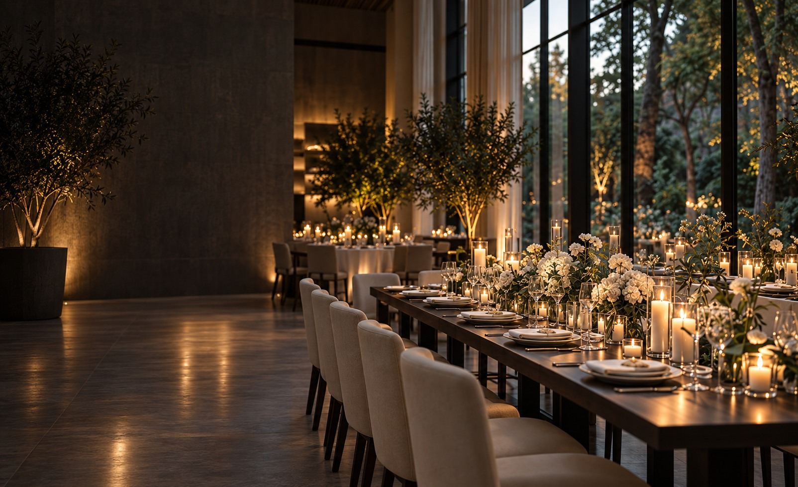
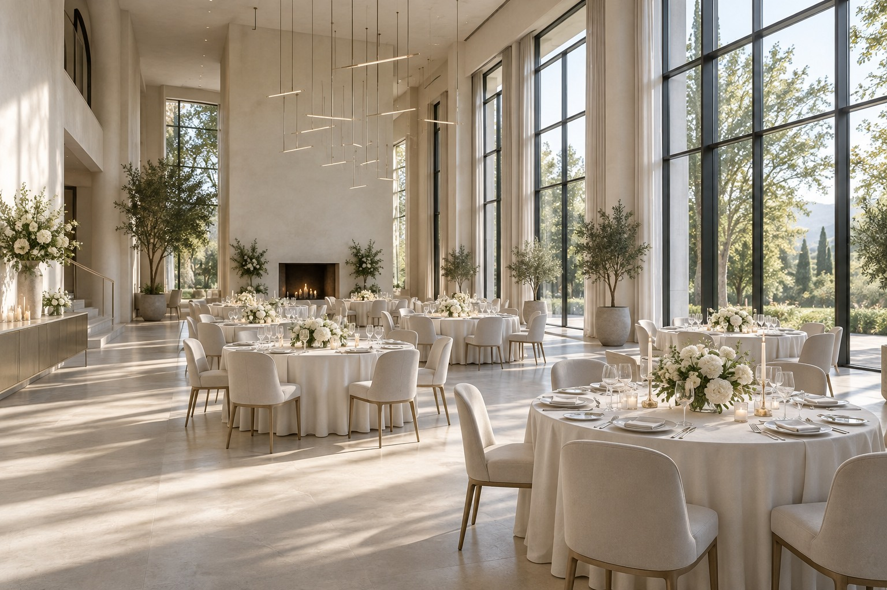

для событий. Обсудить событие
Место для ваших
особенных событий
Свадьбы, корпоративы и частные праздники.
С вашим характером. В вашем ритме.
Ваш повод
У каждого события
своё настроение
Тихое «да», громкие аплодисменты
или вечер в самом близком кругу.
Найдите своё
пространство
Разные характеры.
Одно внимание к деталям.

Свет / воздух / свобода
Светлый зал
Много естественного света, высокие окна и спокойная архитектура. Пространство, в котором легко представить вашу историю.
Больше, чем интерьер
Всё складывается
в ощущение
Свет в бокалах. Живые цветы.
Разговоры, которые хочется продолжить.
От первой идеи
до вашего вечера
Понятные шаги, чтобы главное
оставалось в центре внимания.
- 01
Расскажите о событии
Повод, желаемая дата и сколько близких или коллег будет рядом.
- 02
Выберите пространство
Посмотрите залы и обсудите атмосферу, рассадку и сценарий.
- 03
Соберите детали
Меню, оформление и программа складываются в единый план.
- 04
Будьте в моменте
Встречайте гостей, обнимайтесь, танцуйте. Этот вечер — ваш.
Перед встречей
Несколько
важных деталей
То, с чего удобно
начать разговор.
Как выбрать подходящий зал?
Начните с формата события и количества гостей. Затем сравните атмосферу пространств и обсудите с площадкой варианты рассадки, место для церемонии и танцев.
Можно ли сначала посмотреть площадку?
В заявке можно указать, какое пространство вас заинтересовало. Время просмотра согласовывается с командой площадки.
Что влияет на стоимость события?
Дата, количество гостей, выбранный зал, меню, оформление и программа. Итоговый состав и стоимость подтверждаются в индивидуальном предложении.
Дата в форме уже считается бронью?
Нет. Это желаемая дата. Доступность и условия бронирования подтверждает площадка после обращения.
Можно ли предложить свой сценарий?
Да, начните разговор со своей идеи. Возможности оформления, работа подрядчиков и технические требования обсуждаются для конкретного пространства.
Каким будет
ваше событие?
Несколько деталей —
и у вашей идеи появится форма.
Выберите формат, пространство
и желаемую дату.